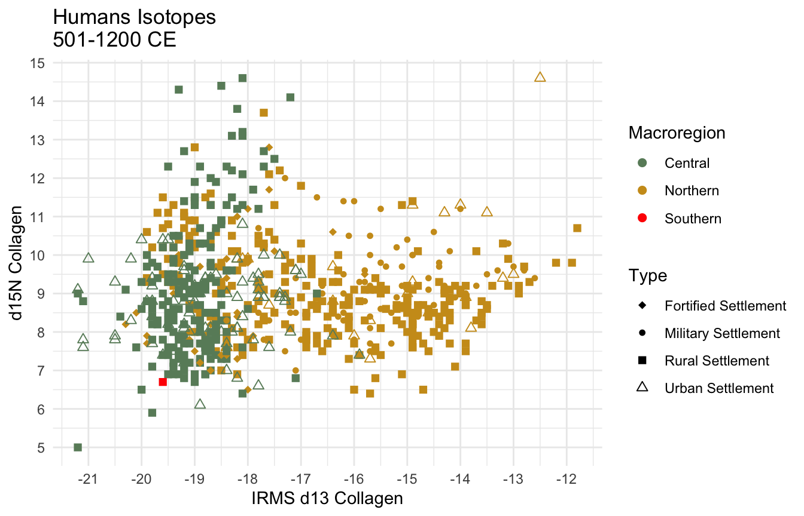
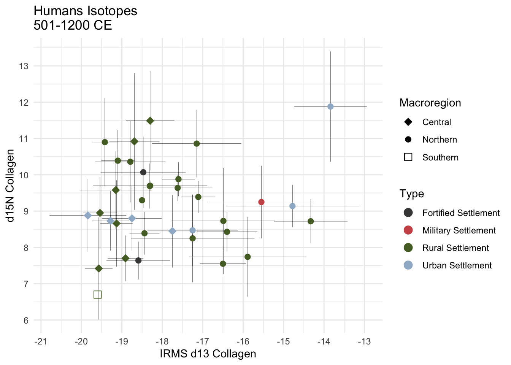
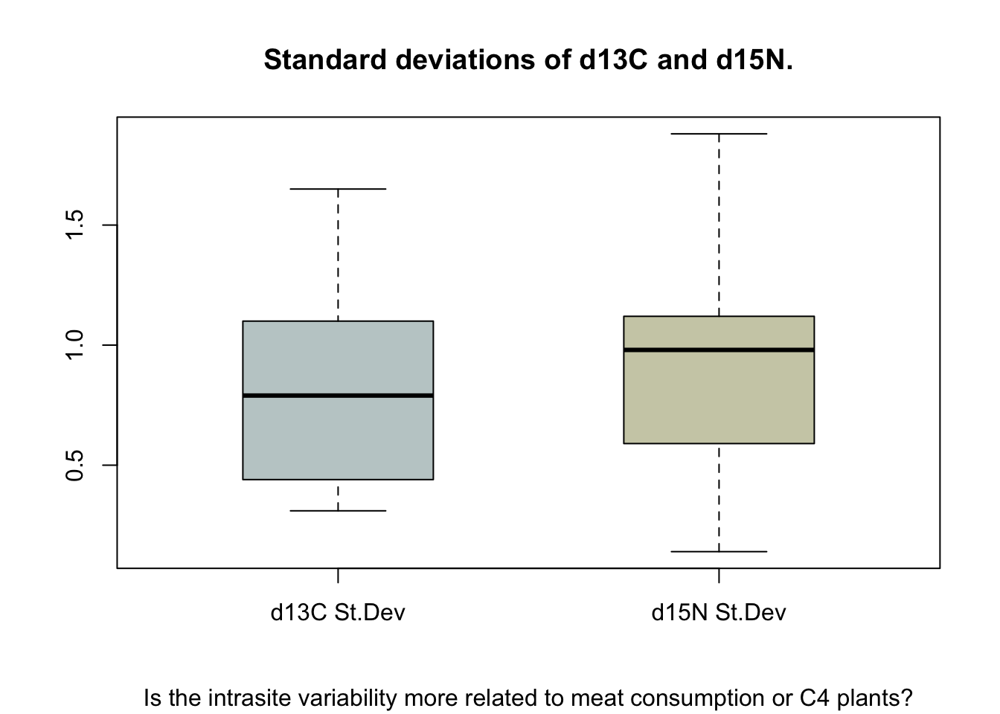
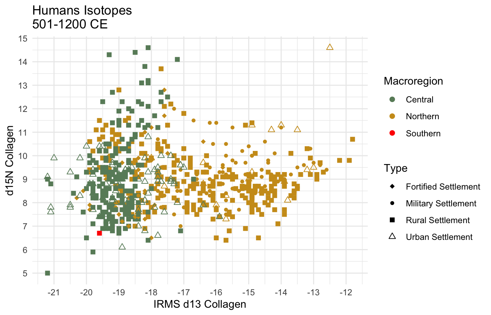
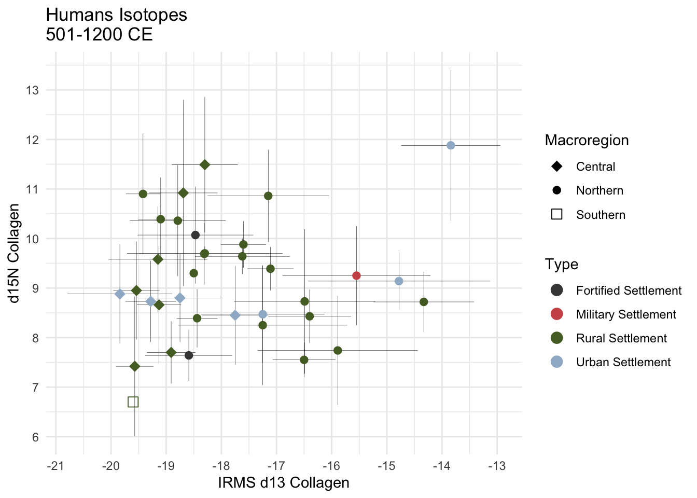
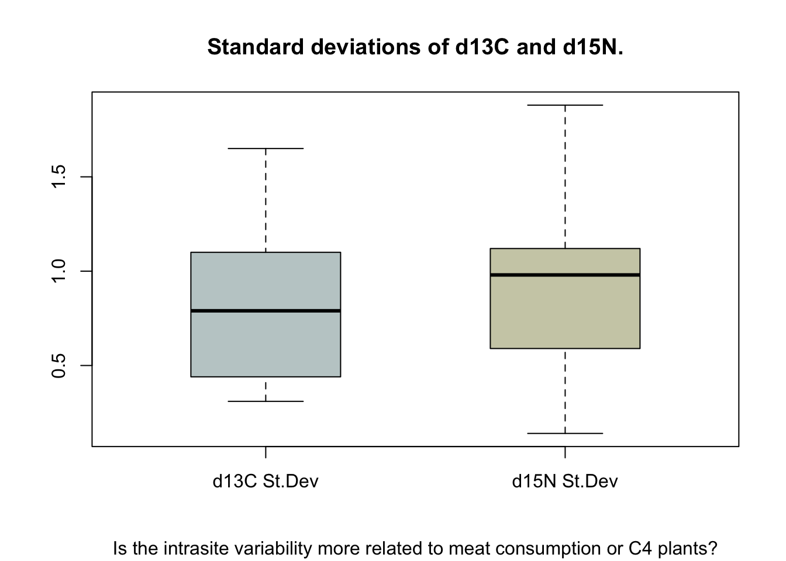

10 Isotopes
Data is from the Compendium Isotoporum Medii Aevi (CIMA) database (Cocozza et al., 2022) and from the IsoArch database.

10.1 Intrasite variability


Data is from the Compendium Isotoporum Medii Aevi (CIMA) database (Cocozza et al., 2022) and from the IsoArch database.


